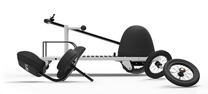

A triumph in design and construction. RoScooter is lightweight and strong carrying riders up to 250lbs.
The chassis is made from high-grade Aluminum that's CNC (computer-numerically-controlled) laser cut, stamped, and folded. It's only 20lbs.
Stepping into RoScooter is simple and safe.
Simply apply the parking brake with the lever located on the handlebars. RoScooter's seat swivels left or right into a lock position. The unobstructed foot board makes it easy to get your feet in. The anti-slip surface is super safe.
RoScooter provides a bio-mechanically efficient and non-injurious means of self-propulsion.
At last there's a user powered scooter that gets you where you need to go while getting a bit of exercise at the same time.
With no motor or heavy batteries you can take RoScooter with you in your car.
The RoScooter employs an ergonomic, efficient, and compact front-and-center mounted lever drive system providing propulsion on both forward and backwards strokes.
Turn the handlebar like a bicycle to steer, twist the grip shift to change gears and pull back on the brake lever to engage a powerful hub brake.
Everything you need. Nothing you don't.
A lot of thought went into RoScooter to make it intuitive to use, stylish, and incredibly functional.
Using the handlebar to propel, steer, shift, and brake is a dream for those with limited hand or upper body strength. And it's possible to operate for those with asymmetric function.
The ROTA powertrain converts reciprocal (push-pull) linear motion into unidirectional rotary output.
RoScooter gives you the option of 8 gearing ratios that can be shifted at low velocity or input force.
RoScooter provides a healthier means of mobility than tradition power scooters, and is easy to transport. Take RoScooter wherever you please. RoScooter is designed to help you enjoy traveling quickly and easily over considerable distances of variable terrain, camber and grade.
With a small footprint and fully articulated steering mechanism, RoScooter provides the maneuverability essential for you to navigate through your home, office, classroom, public transport, shopping centers, and restrooms.
When you get stuck in a tight situation and need to reverse, spin, or shunt nothing works better than simply turning the handlebars and rowing out of the tightest situations. You're in control with RoScooter. You don't need to be scared of a jerky throttle or spongey brakes.
RoScooter was designed to be compatible with your life. In drive-mode you can row yourself to your destination at speeds up to 5 mph. When you reach your destination just swivel the seat and sit up at your office desk or a table at your favorite restaurant.
RoScooter will have you thinking about where you want to go rather than where you can’t.
The 12-inch wheels make riding over uneven ground comfortable and easy. Anti-tip wheels are included.
The ROTA powertrain delivers tremendous power to the front wheel. With your center of gravity optimally located traction is provided to both front and rear wheels.
On variable terrain, camber, or grade, no problem. RoScooter's large wheels work great.
RoScooter steers just like a bicycle. Turn the handlebar and the front wheel turns. It couldn’t be any simpler.
With RoScooter you have incredible maneuverability.
RoScooter turns in its own footprint.
Big function in a small footprint. That’s what the RoScooter is all about. RoScooter is just 24 inches wide. That's the length of two rulers.
Standard doorways in a new home are typically 32 - 36 inches wide. Both ADA requirements and Specially Adapted Housing Minimum Property Requirements specify a minimum hallway width of 48 inches, with a minimum doorway width of 36 inches to allow full wheelchair accessibility.
Mobility has never looked this good.
Because ROTA designs both the powertrain and ride for RoScooter, it's possible to address and improve things like vehicle performance, handling, ergonomics, and design.
RoScooter is engineered to be ANSI/RESNA compliant, the standard for the mobility industry.
RoScooter fully dissembles in seconds. If you were thinking about a road trip save some room for your new best friend.
The rear wheels have quick release hubs. The seat slips out like magic.
On its own the chassis is just 20lbs. With two handles ergonomically located loading in the car is a breeze.
